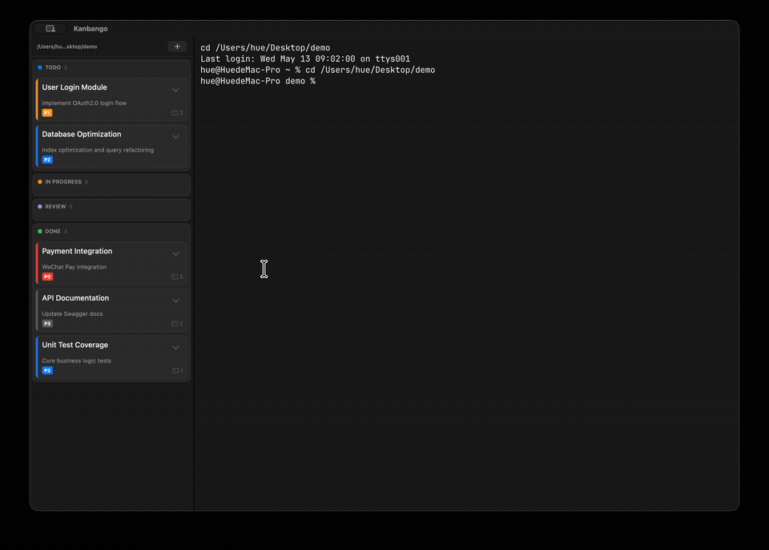
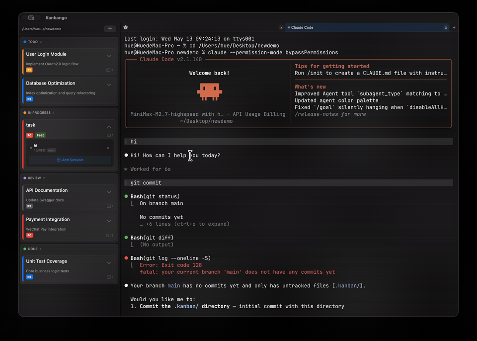

每张卡片
都有自己的
终端。
Kanbango 是一个 macOS 看板，内置 Ghostty 终端。拖一张任务卡，启动一个 Claude Code 会话，不用离开看板就能看它干活。
版本 0.1.0，20 MB。MIT 许可。需要 macOS 13 或更高版本。
待办 1
进行中 1
审查 1
~/code/kanbango
Claude Code
~ claude
⏺ 正在读取 SessionManager.swift
⏺ 正在读取 JsonlWatcher.swift
⏺ 正在编写 token 刷新逻辑
⏺ Bash swift build -c debug
Build complete. 0 errors.
⏺ 正在运行 AuthTests
✓ testRefreshToken
✓ testExpiredToken
⏺ 两个测试需要新的 fixture。
>
main
运行中
2分14秒
演示终端。正在显示 OAuth 登录流程，运行中。
一块会干活的看板。
卡片是任务，卡片背后的终端是会话。两边始终同步。
-
四列，拖放排序
待办、进行中、审查、完成。在列之间移动卡片，双击编辑，给任务加标签和 P0–P3 优先级。
-
真终端，不是预览
Ghostty 的运行时直接链接进应用，用 Metal 绘制。真正的 PTY，你的 shell，你的按键。
-
一张卡片，多个会话
每个任务有自己的终端标签页。新建会话、按 ID 恢复旧会话，或者直接在卡片上关掉它。
-
状态来自 Claude 自己的日志
监听器盯着
~/.claude/projects下的 JSONL 文件，把每个会话标成运行中、空闲或等待输入。 -
每个项目一块看板
把 Kanbango 指向一个工作区，它就把这个项目的任务和终端标签页分开管理。
-
原生，不是套壳
SwiftUI 和 AppKit，真正的 .app。界面跟随系统的浅色 / 深色外观。
真实的样子。
上面的看板是演示。下面两段是应用本身的录屏。


没有 WebView。
没有第二个窗口。
终端不是截图，也不是浏览器标签页。Kanbango 链接 Ghostty 的静态库，把终端画面画进自己的视图，就放在看板旁边。按键直接进 PTY，画面走 Metal。
会话可以跑在 worktree 里，两个 agent 在同一项目上干活也不会互相踩。Kanbango 读 Claude Code 已经写下的 JSONL 文件，所以卡片知道会话是在运行、空闲，还是等你输入。
任务存在工作区里的一个 JSON 文件里。Kanbango 没有账号，也没有自己的服务器。
- 看板
- SwiftUI 卡片和列，按工作区保存。
- 会话
- 在这里启动 Claude Code，按会话 ID 恢复。
- 终端
- Ghostty 的 surface 画在 NSView 里，用 Metal。
- 状态
- Claude 的 JSONL 日志，边写边解析。
跑起来。
下载应用，或者从源码构建，先看看代码再决定。